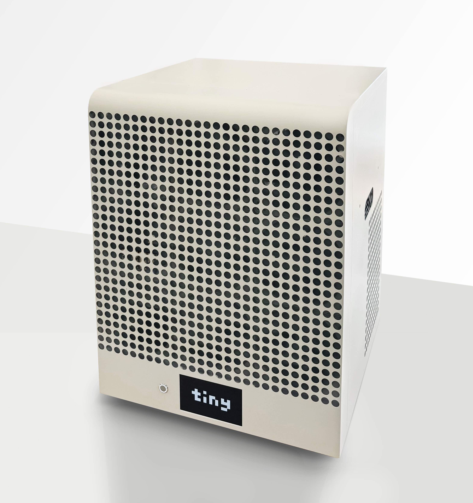

Tinygrad
We write and maintain tinygrad, the fastest growing neural
network framework (over 23,000 GitHub stars)
It's extremely simple, and breaks down the most complex networks into 3 OpTypes
ElementwiseOps are UnaryOps, BinaryOps, and TernaryOps. They operate on 1-3 tensors and run elementwise.
SQRT, LOG2, ADD, MUL, WHERE, etc...
ReduceOps operate on one tensor and return a smaller tensor. SUM, MAX
MovementOps are virtual ops that operate on one tensor and move the data around, copy-free with ShapeTracker. RESHAPE,
PERMUTE, EXPAND, etc...
But how...where are your CONVs and MATMULs? Read the code to solve this mystery.
Work at tiny corp
We are now funded and hiring full time software engineers. Very talented interns okay.
See our bounty page to judge if you might be a good fit. Bounties pay you while judging that fit.
We are also hiring for operations and hardware, but if you haven't contributed to tinygrad your application won't be considered.
Tinybox

We sell a computer called the tinybox. It comes in two colors:
| red | green |
| TFLOPS | 738 FP16 TFLOPS | 991 FP16 TFLOPS |
| GPU RAM | 144 GB |
| GPU RAM bandwidth | 5760 GB/s | 6050 GB/s |
| GPU link bandwidth | 6x PCIe 4.0 x16 (64 GB/s) |
| CPU | 32 core AMD EPYC |
| System RAM | 128 GB |
| System RAM bandwidth | 204.8 GB/s |
| Disk size | 4 TB raid array + 1 TB boot |
| Disk read bandwidth | 28.7 GB/s |
| Networking | Dual 1 GbE + open x16 OCP 3.0 |
| Noise | < 50 dB, 31 low speed fans |
| Power Supply | 2x 1600W |
| BMC | AST2500 |
| Operating System | Ubuntu 22.04 |
| Driver Quality | Mediocre | Great |
| Price | $15,000 | $25,000 |
(specs subject to change. all preorders fully refundable until your tinybox ships. price doesn't include shipping. estimated timeline 2-4 months)
FAQ
- How will my preorder turn into a tinybox?
- You will be contacted by e-mail when we are ready to finalize your preorder. First boxes will ship in April
2024.
- Is tinygrad used anywhere?
- tinygrad is used in openpilot to run the driving model on the Snapdragon 845 GPU. It replaces SNPE, is faster, supports loading onnx files, supports training, and allows for attention (SNPE only allows fixed weights).
- Is tinygrad inference only?
- No! It supports full forward and backward passes with autodiff. This is implemented at a level of abstraction higher than the accelerator specific code, so a tinygrad port gets you this for free.
- How can I use tinygrad for my next ML project?
- Follow the installation instructions on the tinygrad repo. It has a similar API to PyTorch, yet simpler and more refined. Less stable though while tinygrad is in alpha, so be warned, though it's been fairly stable for a while.
- When will tinygrad leave alpha?
- When we can reproduce a common set of papers on 1 NVIDIA GPU 2x faster than PyTorch. We also want the speed to be good on the M1. ETA, Q2 next year.
- How is tinygrad faster than PyTorch?
- For most use cases it isn't yet, but it will be. It has three advantages:
- It compiles a custom kernel for every operation, allowing extreme shape specialization.
- All tensors are lazy, so it can aggressively fuse operations.
- The backend is 10x+ simpler, meaning optimizing one kernel makes everything fast.
- Where is tinygrad development happening?
- On GitHub and on Discord
- How can the tiny corp work for me?
- Email me, george@tinygrad.org. We are looking for contracts and sponsorships to improve various aspects of
tinygrad.
- How can I work for the tiny corp?
- See hiring above. Contributions to tinygrad on GitHub
always
welcome, and a good way to get hired.
- Can I invest in the tiny corp?
- Invest with your PRs.
- What's the goal of the tiny corp?
- To accelerate. We will commoditize the petaflop and enable AI for everyone.